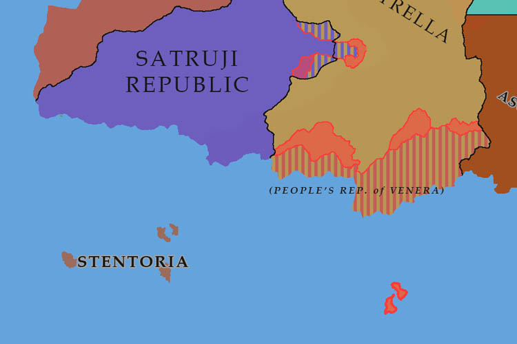

PRIMARY EDITION, VOL. III
YEAR 511, QUARTER TWO
INTERNATIONAL JOURNALISTS' COALITION

The People's Republic of Venera has joined the Satruji Republic in their conflict with the Kingdom of Tyrella. The Veneran Navy has made landfall at several points along the southern cost of Tyrella and is currently advancing northwards. Veneran ships have also begun heavy bombardment of the Tyrellan islands of Mayora and Malloca, both of which possess extensive fortifications.
The Veneran Air Force has also starting an extensive bombing campaign of Tyrellan cities. With the Tyrellan Air Force already stretched defending airspace in Tyrellan the occupied territories, many cities have gone without defending aircraft and the Tyrellan Army is known to lack sufficient anti-aircraft emplacements to keep up with the numbers of attacking Veneran planes.
Due to the redeployment of Tyrellan forces to the new southern front, and the reinforcement of the Satrujan border, the Satrujan army has been able to push back into the occupied territories. The Veneran Army has also begun a push through the formerly occupied regions and further into Tyrella, with some military experts believing the goal to be an encirclement that would constitute the bulk of the Tyrellan forces.
The fighting has severely disrupted trade through the Tyrennan Sea, with vessels now requiring scheduled escorts by the Veneran Navy to pass through the affected region. Some hope that the Veneran involvement in the conflict will put a swift end to the war. Others however, others point to the unchecked destruction that the Veneran's have resorted to as a means of achieving this goal, stating that even with the drawn out nature of the war, its physical effects before the Veneran involvement were limited in scope.
Assentian investigative agents working in the northern regions of the Empire of the Ascension of Sol have discovered independent weapon brokers selling weapons to the Tyrellan army. The brokers were operating out of a warehouse near the city of Fumavell and were found to be using various "transfer stops" where guns and other military equipment would be discreetly transferred from one truck to another in a chain of stops that stretched out to the Tyrellan border. The Assentian government has since apprehended the men involved and it is expected that they will begin a greater effort to crack down on such operations. The Tyrellan government has refused to comment on the findings.
The first annual meeting of the CEC Council was held this quarter. The nation states were keen to begin the negotiations involved in membership of the burgeoning economic cooperative. The MAC government opened the meeting by stating: "given the history of war in the Cimmeran region as a whole, it is clear that jointly lifting the economic burdens of devastation and war reparations should be a present priority". The MAC has since pledged significant investments in each of the member states with the primary focus of "improving supply lines and logistics to help standardise prices across the nations".
The region has historically seen a significant number of wars, the most recent of which being the four way conflict between the nations of Sirelland, Tedra, Oshiela, and Haclesh. The recent forming of the CEC and the new investments by the MAC represent are now believed to represent a significant new era in the history of the region.
Engineers at the National University of Babylon have successfully completed testing of their experimental train, the XHS-03 "Arrowhead," setting a land-speed record for rail of 160 km/h. The MAC government has given the green light for a large-scale infrastructure project aimed at better connecting disparate parts of the nation. This will take the form of a High-Speed Rail network within the country.
The first phase of the construction plan will consist of two primary lines: the Uruk-Solaris-Babylon "Gilgamesh" HSR, and the Assur-Solaris "Enkidu" HSR. Construction will begin in Q3, with the goal of completing this network in five years (by Q4, Y516). According to the MAC government, the lines will be opened in a phased manner in order to "gauge public engagement and upgrade systems as necessary". Should this first phase be received well, further construction will be approved.
The Republic of Haclesh and the Mercurian Assyrian Confederation, two states within the recently formed Cimmeran Economic Cooperative, have struck a deal in which Haclesh is to receive ten A-24 "Anu" fighter jets from the M.A.C. in exchange for a 20% discount on small arms trade. The deal also stipulates that the Hacleshi government cannot use the fighter craft for "belligerent attacks". This comes after calls from Haclesh to further defence development within the CEC.
The CEC and Risanov Kingdom have signed an agreement to increase trade of Cerium and Neodymium by developing a new rail line which will connect the CEC directly to the Risanovi trade network. As per the agreement, the CEC will receive a 5% discount on Cerium and Neodymium, and in return the CEC will aid the Risanovi's greatly in the construction of the new line. Despite this aid however, the line will still be built to Risanovi rail standards, this being a key point in the negotiations which eventually lead to the signing of the deal.
In a historic agreement, the CEC has signed a trade deal with the Millar State involving the lowering of tariffs and prices to increase the flow of raw materials and automobiles between the two nations. The deal is considered to be politically significant as the Millar State has historically been one of the more isolationist nations within the Cimmera/Ortilla region, and has refrained from making developed trade relations with any particular state for almost a hundred years.
Late in the quarter, an Arrolian navy vessel patrolling off of the south coast of the island of Goliath, one of the constituent islands of the Gale Islands, detected a submarine also patrolling within Arrolian waters. The vessel attempted to pursue the submarine and force it to surface, however upon surfacing so the submarine launched a guided missile at the Arrolian ship before diving again. The missile landed on the water on the starboard side of the vessel, damaging it slightly but ultimately no crew were significantly injured. The submarine or any other unauthorised vessels have not been detected in Arrolian waters since the incident.
Following the major success of Arrolian investment in the Gale Islands, further funding has been allocated to continue to develop the infrastructure on the islands and allow it to thrive. Tourism to the islands has also increased significantly following the investments, and local wildlife agencies hope that the heightened awareness will bring more resources to allow for study of the islands' unique wildlife.
In a public statement issued to nations in the regions of Kovaland, Alva, and Tyrenna, the government of the Gael Kingdom has announced that it will be closing the Koval Straight to all seafaring traffic for the foreseeable future. The announcement comes as a shock to many nations, particularly in the region of Alva, that use the straight as a key trade route for shipping and as a way to cheaply bypass the Kovalns mountain range.
The Gael Kingdom has thus far given little reason as to the closure, citing only "security and internal legislature concerns", however some political researchers believe that this may be a way of attempting to "softly" curb any potential Callistan involvement in the ongoing Satruji-Tyrella conflict, wherein the Koval Straight may have acted as a highly defensible corridor through which the Callistan Navy would be able to back up or invade Tyrella from its northern coast.